In China Employee Termination: Pulse Incident-Commander Brief for Foreign Employers (2026 Testing Run)
Key takeaways
- In high-risk China termination cases, appointing an incident commander reduces avoidable execution drift.
- Legal route context should lead, but one command owner should coordinate evidence, communication, settlement, and escalation decisions.
- Foreign employers often lose control when ownership is fragmented across HR, legal, payroll, and management.
- Payroll and IIT close-out should be command-critical checkpoints, not downstream administration.
- Command clarity improves speed, auditability, and dispute preparedness.
Pulse lead: why this framing matters
Many foreign employers have legal advice and internal templates, yet still face disputes because no one truly owns the case end-to-end once pressure rises. Decisions become distributed, messaging diverges, and payout assumptions change late. The result is not just compliance friction—it is preventable exposure.
This run uses an incident-commander format: one accountable case lead coordinates all control lanes before and during execution.
Plain-language legal/regulatory context first
China’s Labor Contract Law sets termination route boundaries. State Council implementation rules and SPC judicial interpretation shape how those routes are assessed in real dispute settings. For foreign operators, this means route validity is only one part of defensibility. Reviewers also look for process consistency, evidence quality, and settlement reliability.
An incident-commander model operationalizes that legal reality by assigning clear command responsibility for coherence.
Command map: who owns what
Incident commander (HR/legal operations lead)
- Owns timeline control and decision log integrity.
- Confirms that no employee-facing action occurs before control gates are satisfied.
- Escalates blockers and records override decisions.
Legal lead
- Validates route basis and legal-risk level.
- Sets mandatory escalation triggers.
- Reviews exception handling language.
Evidence owner (HR + manager)
- Compiles and verifies objective records.
- Maintains chronology integrity and source mapping.
- Flags missing evidence before action windows.
Settlement owner (Payroll + finance)
- Locks severance/wage/leave/IIT assumptions.
- Maintains version control and approval trail.
- Provides payment timing certainty.
Communication owner (HR + manager)
- Aligns script, notice, and meeting protocol.
- Controls bilingual consistency where needed.
- Logs delivery and acknowledgment outcomes.
Command phases (without timeline framing)
Phase Alpha: Route command check
Commander validates legal route with counsel and confirms case risk level.
Phase Bravo: Evidence command check
Commander verifies evidence completeness and chronology confidence.
Phase Charlie: Settlement command check
Commander confirms payout model lock, IIT logic, and finance approvals.
Phase Delta: Communication command check
Commander validates script coherence and refusal-event playbook readiness.
Phase Echo: Execution command
Commander runs real-time log of meeting, service, access changes, and payroll triggers.
Phase Foxtrot: Closure command
Commander confirms post-action payment proof, archive completeness, and lessons logged.
Practical implications for foreign employers
- End-to-end accountability reduces cross-functional contradiction.
- Command logs improve legal defensibility and internal governance.
- Escalation decisions become faster with one accountable coordinator.
- Multi-city entities can maintain consistency while adapting local triggers.
For headquarters teams, this model also simplifies oversight: instead of managing function-by-function updates, leaders can review one command status page with explicit blockers, owners, and decision consequences.
Daily operations SOP (role-by-role)
Step 1: Appoint commander and publish role sheet
Assign one named owner and define authority limits.
Step 2: Run route and evidence command checks
No outward action until legal and evidence owners sign command readiness.
Step 3: Run settlement command check
Lock model version and IIT method before communication finalization.
Step 4: Run communication and contingency checks
Approve language package and refusal protocol.
Step 5: Execute under command log
Capture all material events and decisions with timestamps.
Step 6: Close under command audit
Verify closure artifacts and store case pack in controlled archive.
Required document checklist
- Commander appointment note
- Route memo and legal-risk classification
- Evidence index + chronology verification log
- Communication package + approval record
- Settlement worksheet + IIT note + version lock
- Command decision log + override trail
- Service/receipt and payment proof
- Closure audit and archive manifest
Exception handling playbook
Commander detects late evidence gap
Pause action; legal reassessment required before proceeding.
Settlement assumptions change near execution
Reopen settlement command check; prohibit partial communication.
HQ requests acceleration despite unresolved blockers
Record formal risk acceptance and named approver; escalate or defer.
Employee refusal event
Activate refusal protocol and document service alternatives.
System implementation notes
Add command-control fields to HRIS/payroll:
- Commander identity and authority level
- Phase status fields (Alpha–Foxtrot)
- Blocker severity and escalation reason codes
- Settlement model version + IIT method field
- Override approval log
- Closure completeness score
Common mistakes and prevention
Mistake: de facto shared ownership
Prevention: explicit commander assignment and authority boundaries.
Mistake: legal and payroll operating in parallel silos
Prevention: mandatory command checkpoint synchronization.
Mistake: communication finalized before settlement lock
Prevention: Charlie phase must clear before Delta phase.
Mistake: no closure accountability
Prevention: Foxtrot phase required for case close.
What to do now
- Define incident-commander role for all China termination cases.
- Publish phase-gate checklist and owner matrix.
- Make settlement lock mandatory before communication release.
- Train managers on command escalation protocol.
- Add city-level trigger notes to commander playbook.
- Pilot on three active cases and compare outcomes.
- Track blocker recurrence by command phase.
- Standardize command log format.
- Report weekly command metrics to leadership.
- Re-tune command playbook each hourly quality cycle.
Command KPI dashboard
Track: phase-clearance time, blocker recurrence by phase, override rate, and post-action incidents by failed checkpoint. Add one decision-value metric: percentage of cases rerouted to lower-risk routes after commander escalation. Add one governance metric: percentage of cases where all phase decisions were documented before employee-facing action. Together these indicators show both operational speed and control quality.
Rollout note for foreign headquarters
Start with a two-week pilot in one entity, then standardize commander logs and phase definitions before regional rollout. This helps avoid inconsistent interpretations of blocker severity and keeps cross-country reporting comparable.
What to watch next
- Continued focus on process and evidence coherence.
- Persistent settlement/IIT transparency as dispute factor.
- Ongoing city-level variation in procedural sensitivity.
FAQ
Is incident-command governance legally required?
No. It is a governance method to improve execution quality and defensibility.
Can small teams still use this model?
Yes. One person may hold multiple roles, but commander accountability should remain explicit.
Why elevate payroll to command level?
Because payout and tax ambiguity frequently triggers avoidable disputes.
When should external PRC counsel be mandatory?
High-risk unilateral routes, restructuring, refusal scenarios, protected-sensitivity cases, and multi-city complexity.
Legal depth appendix (secondary)
This brief is grounded in the PRC Labor Contract Law, State Council implementation regulations, and SPC labor-dispute interpretation guidance. The practical implication remains consistent: route legality, procedural fairness, and documentary reliability must align through settlement completion.
Disclaimer
This content is informational only and not legal advice. China labor outcomes are fact-specific and locally sensitive. Seek qualified PRC legal advice before action.
Sources
- National People’s Congress. Labor Contract Law of the PRC (English). http://www.npc.gov.cn/zgrdw/englishnpc/Law/2007-12/13/content_1384064.htm (accessed 2026-03-01).
- State Council. Regulations for the Implementation of the Labor Contract Law (Decree No. 535). https://www.gov.cn/gongbao/content/2008/content_1124615.htm (accessed 2026-03-01).
- Supreme People’s Court. Interpretation on labor dispute application issues (Fa Shi [2020] No. 26). https://www.court.gov.cn/fabu/xiangqing/243981.html (accessed 2026-03-01).
- China Briefing (Dezan Shira & Associates). Employee Termination in China (updated 2025-10-17). https://www.china-briefing.com/news/employee-termination-in-china/.
- Littler. Key Recent Developments in China’s Employment Law (2024-03-20). https://www.littler.com/news-analysis/asap/key-recent-developments-chinas-employment-law-china-us-comparative-perspective.
- PwC Worldwide Tax Summaries. People’s Republic of China: Individual Taxes on Personal Income (2025-01-15). https://taxsummaries.pwc.com/peoples-republic-of-china/individual/taxes-on-personal-income.
Need local employment support in China?
If you need a compliance-first partner for hiring, payroll, and risk controls in China, China-Payroll.com can help evaluate the right setup.
Image Prompt Pack
Create a 16:9 hero image for article title: 'In China Employee Termination: Pulse Incident-Commander Brief for Foreign Employers (2026 Testing Run)'. Scene: global operations team evaluating workforce model options for China market entry. Include motifs: decis…